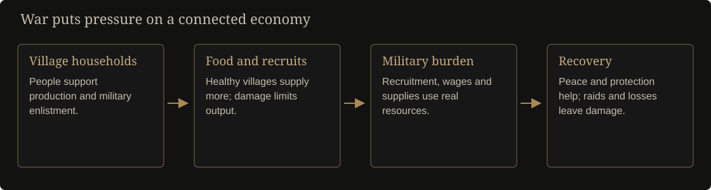

Economy and survival
Plan for troop costs, population, food, supply and recovery.
Troops cost more than in native Bannerlord
Preview included#Recruiting, upgrading, and maintaining a strong army is more expensive in Reign, especially as troops become more advanced. A field army that you can buy today may still be unaffordable to keep supplied. Native perks and discounts still matter; negotiated hero or guest pay follows its own agreement.
Automatic recruitment and upgrading consider the actual payer's funds and future military obligations. Having spare kingdom wealth does not necessarily mean every clan can replenish. Manual player purchases still require real resources, without implying that every automatic safety buffer is a new player spending rule.
Prisoner ransoms follow native valuation rather than inheriting the increased enlistment price. Releasing or selling prisoners is not a way to recover the full cost of building an elite force.
The higher wage base applies to regular troops in field parties and garrisons. The owned-party wage display accounts for that party's actual modifiers and discounts. Recruitment previews use the receiving party's forecast where available.
Kingdom regulars cost a little more while their realm is at war with another kingdom and a little less at peace. This applies to both field and garrison wages after existing modifiers. Hero salaries, mercenary troops and companies, and independent clans are outside this particular adjustment. See War economy and clan trade settings to adjust the available cost rules.
Recruitment uses people, not an endless pool
Preview included#New regular military recruits draw from eligible village households. Heavy recruitment leaves fewer people available and slows natural household growth for a while. A depleted or badly damaged village may be unable to supply more soldiers even when you have gold.
This applies to player and AI recruitment and to supported automatic garrison and replacement-retinue routes. Existing soldiers are not retrospectively charged when the economy update arrives. Creating a new lord party does not grant a free fully funded army: its household troops depend on local people and actual money.
Transferring soldiers, returning an expedition, upgrading an existing troop, or recruiting a prisoner is different from a new enlistment. Native mercenaries and special quest routes have their own handling. Civilian caravan and fishing crews do not consume village military manpower merely by being created or replenished.

For automatic lord-party creation in NPC-ruled kingdoms, a noble clan generally needs land. Hired mercenaries can establish a party without land. Kingdom military support requires both land and an active serving lord party. Player-directed establishment and native initial or quest routes have their own rules. A landless household can still qualify for local stipends or civilian trade under Household stipends and NPC trade.
Household stipends and NPC trade
Preview included#A landless NPC noble household with a verified permanent home may receive a small weekly stipend from the clan leader who owns that holding. Eligibility looks at the family's finances, the current owner, shared kingdom, and the payer's ability to keep a military reserve. To let your own clan participate, enable Fund Local Household Stipends in Reign's in-game settings. Payments use your personal gold.
Eligible landed and landless NPC noble clans can sponsor land caravans. With War Sails, they can also sponsor sea convoys from suitable ports. Both start off. Follow War economy and clan trade settings to enable them.
The sponsoring clan pays the town one formation fee, with applicable native cultural discounts. Bannerlord supplies the starting trade purse separately. Merchant crews run new parties without taking a noble away from other duties. The clan owns the party and receives its trade remittances. Older pilot caravans can keep their existing named captains and records.
Clans need enough cash for the fee and their military reserve. Chance, per-clan limits, the shared world limit, and a suitable departure location affect whether a launch happens. Turning a mode off or lowering its limit changes future launches. Existing parties continue trading. See War economy and clan trade settings.
Raids, population, and recovery
Preview included#Village households support production. Healthy larger villages contribute more, while devastation reduces actual output. A completed raid resets agricultural recovery; normal functioning and safer, better-fed conditions allow it to recover gradually.
A raid's damage does not end when the smoke disappears. Several damaged villages can place separate security burdens on their linked town. Recruiting may remain restricted during early recovery. A village that is not functioning cannot be assumed to produce food or recover normally.
Siege aftermath matters too. Mercy is less damaging to security than pillage or devastation. Choosing the harsher option has a continuing cost, not just a different line in the victory report.
Raid damage now has its own food capacity measure alongside household recovery. Severe or repeated raids can shut down new food production. A functioning village recovers gradually, and low food or security slows that recovery. Open the Economic Report from Court to compare food capacity, household recovery, actual output, and healthy potential for the current population.
In fishing villages, disruption reduces new catches from boats and shore facilities. Fish already carried remain in cargo. A working voyage can finish and unload. When the village's fishing capacity shuts down, boats unload before waiting ashore. Recovery allows another departure. Food shipments and relief use their own rules. Control Center → Options → War economy → Raid food disruption keeps recorded damage available for when you turn the rule back on.
Food markets, settlement stocks, and relief
Preview included#Distinguish food offered in a market, food held by a settlement, food carried by an army, and cargo in transit. They are not the same stockpile.
Threatened unsieged towns prioritize buying available food within their civilian budget. They cannot buy food that does not exist or spend unlimited money. Realm relief moves real food from eligible better-supplied holdings toward shortages while protecting donor reserves. It prioritizes serious projected need and loses some food along the route.
Sieges can block purchases and deliveries. A manual shipment deducts stock when dispatched, takes time, and can be held outside a newly besieged destination while cargo deteriorates. Food traveling between holdings is not immediately available at both ends.
Granary actions, normal market buying, automatic relief, and a court grant are separate mechanisms. Inspect the Economic Report's current reserve and projected trend before assuming a shipment solved a deficit. Relief can ease hunger without making a besieged or devastated realm self-sufficient.
Garrisons, patrols, and demobilization
Preview included#Stationary garrison regulars have lower wage and food burdens than equivalent field troops. Native governor, culture, building, Billeting, and Clan Accord effects retain their own benefits and costs. A patrol or visiting army does not receive the new garrison reduction just for being nearby.
Patrols use troops transferred from the home garrison. Replenishing them returns survivors before issuing another detachment. Removing a patrol outside combat returns its soldiers where supported; it does not create a fresh free roster.
Peace drawdown can return some released manpower to functioning villages, while raids and mobilization strain still matter. It provides no automatic gold payout or instant prosperity. Keep defensive needs and actual household recovery in view when changing standing.
Battle medical discharge
Preview included#Some regular soldiers newly wounded in battle can retire if they survive the battle without being captured and remain with the force they fought in. The result varies each battle. Better surgeon Medicine lowers the maximum possible loss. Previously wounded troops, captured soldiers, heroes, and civilian crews are outside this discharge rule. Rescue or release does not make a captured soldier eligible from the earlier battle.
Eligible retired soldiers can contribute back to functioning village households. This is separate from peacetime release of healthy soldiers. See Peace Standing, War Standing, and garrisons for peacetime release. Medical discharge is installed. Individual battle and reload edge cases remain under review.
Ships, ports, and military purchases
Preview included#Where War Sails is present, player ship purchases, repairs, and upgrades retain native pricing. NPCs retain their native discounted ship procurement. A cheaply procured NPC ship does not become a full-value resale windfall simply because it was transferred to a friend. Captured ships retain their separate normal native resale handling.
Selling needs actual port funds. A sinking, discarded hull, or cleanup removal does not pay compensation. Governor commissions come from real eligible port business and cannot exceed the transaction. Existing ships without a known acquisition history use the documented migration handling instead of an invented past battle or purchase.
Automatic military food and mount purchases in the payer clan's own realm still pay the market, but do not create an extra tariff payment back into that realm through the old loop. Ordinary trading and foreign purchases retain their own rules. This is a targeted accounting change, not a general abolition of tariffs.